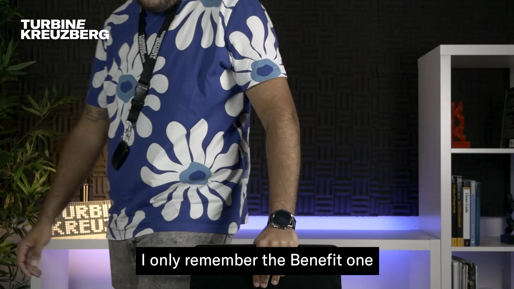
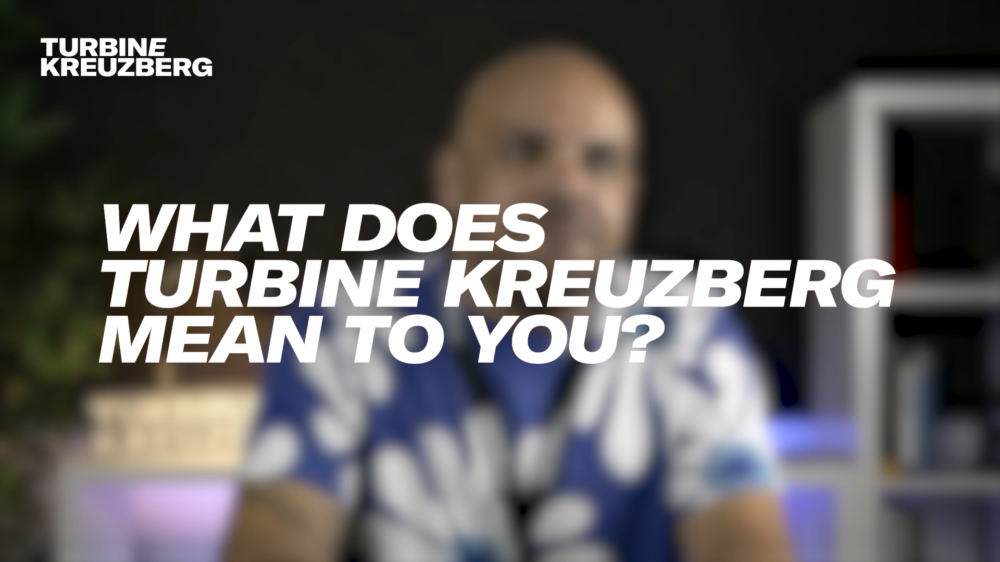

Anatomy of a Testimonial Video
If there's a video that I'm particularly proud of pulling off during my time at Turbine Kreuzberg is the Portugal's
Team Testimonial Video, from 2023. It was a project that I had been wanting to do for a long time, and I finally
got the
chance to do so. It's not, by any means, an original concept, as it's a common practice in the industry, but it
was a great opportunity to show the team's faces and voices to the world.
Take a look at the video, and check my breakdown below!
* * *
The main objective is quite simple: show the team's faces that you usually don't see.
To do so, we defined that the video should have a relaxed tone, with a lot of smiles and laughs. It should also
reflect the team's diversity and the what is it like to work at the company. For this, we knew we had to start by
laying down the overall mood of the video.
At the beginning you're watching a static shot of people getting ready to get recorded. This helps to set the
mood. Look how casual and relaxed they are. You can also see the difference in personalities, for us, that was a
must-have. During our brainstorming sessions, we decided that the title should be masked by the interviews, giving
a sense of profundity to the title, however, time constraints made us change our minds. (Maybe it's time that
Adobe Premiere adds an AI-powered mask tool?)

There were seven interviews in total, so, once that we had all the interviewees appear on the screen, we jumped to
the introductions. We wanted to make sure that the viewer knew who was talking, so we added their names and roles
on the screen. One by one, everyone had the chance to introduce themselves by answering the same questions:
Who are you?
And what do you do?
Once everyone was introduced, we moved to the main part of the video: the interviews.
Every question had its own section, demarqued by a title card with the question over a blurred background of the
video. This helped to keep the viewer engaged and focused on the content.

We had defined the questions beforehand, with some preparation on the interviewees' part. The choosen questions
were the ones that we thought would give the best insight on the team's daily life and the company's culture.
We knew that we wanted to hear what was the best part of working at the company, and for that we constructed the
questions in a way that the answer was always positive.
The questions were:
What does Turbine Kreuzberg mean to you?
What is the benefit that you love the most?
Who's the best PingPong player? (to bring back the playful mood)
What did you learn working here?
What are your expectations for the future?
Finally, we ended the video the same way we started it, with a relaxed pair of seconds of the team saying goodbye,
thanking for their participation and leaving the camera frame. * * *
Technically wise, this was an easy project. We used the same hardware that we had been using for the past videos,
a Panasonic Lumix G85 with a 12-55mm lens, and a Rode VideoMic Go II attached to the camera. By itself, it was a
simple and fast setup. We were also using two softboxes to light the subject, and a LED strip mounted on the
background shelf to give some depth to the image.
There was, of course, some logistics applied to such recording. We had to make sure that everyone was available
and on site, which wasn't easy as, by that time, we had several people working fully remote hundreds of kilometers
away. So we took advantage of a company event happening on a weekend, which got most of the Portugal team on
site. One by one, we recorded the interviews, not allowing more than one interview subject on the studio at the
time.
Editing was done on Adobe Premiere Pro. As we had tens of minutes of footage, the cutting took some time. The
hardest part was definitelly choosing the best answers to each question. If you notice, not everyone got featured
for every question, which was simply a constraint of making sure that the video didn't get too long.
As for the rest of the editing, color grading and sound mixing were done with my colleague Ema Gonçalves, who was a huge help on the
project.
All and all, this was definitelly a fun project to work on, and I'm looking forward to the next one!